From two funds to a four-asset portfolio
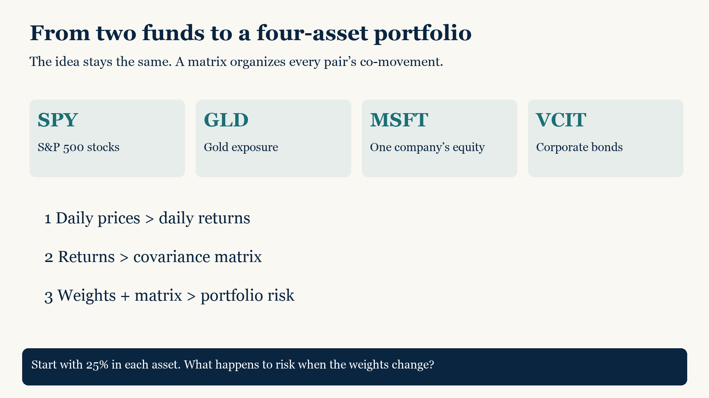
Start with prices on matching dates
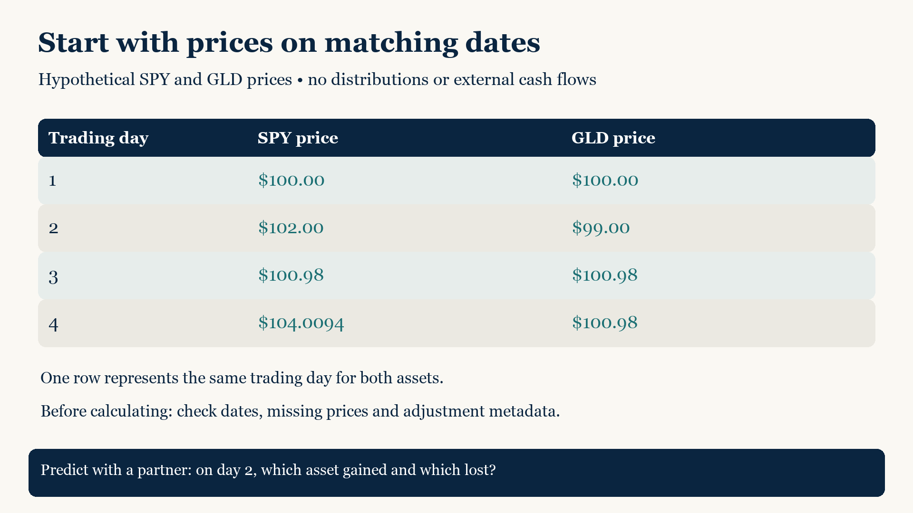
Turn a price change into a daily return
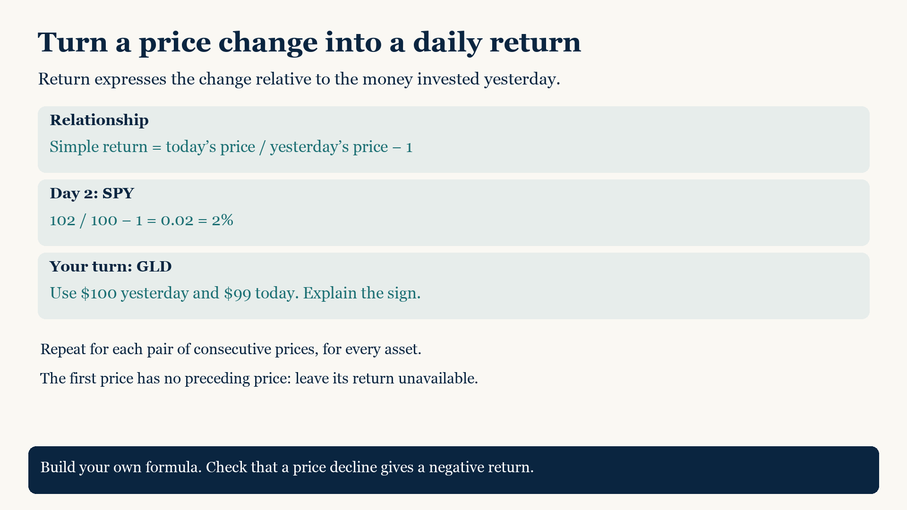
LN adds returns over time; EXP converts back
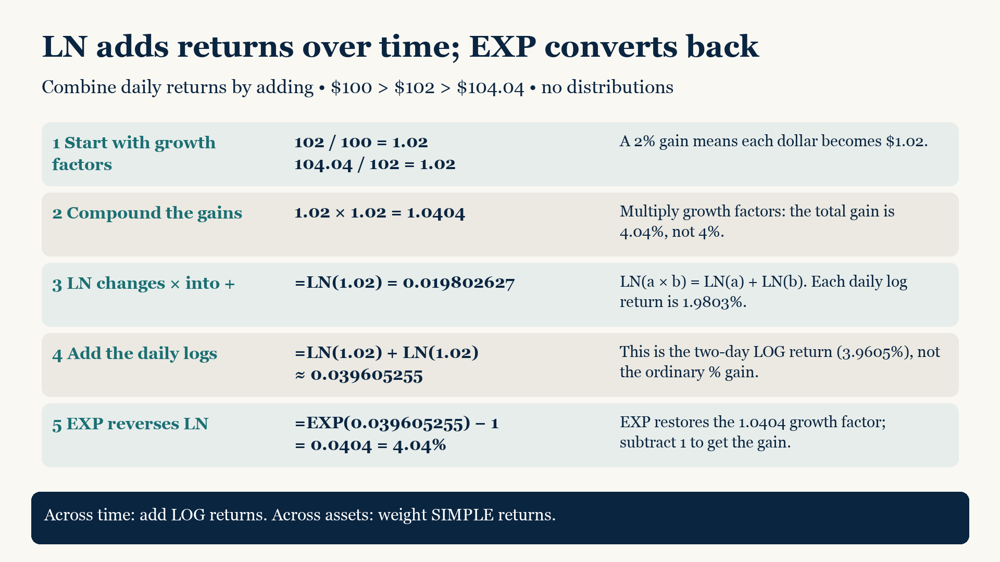
Returns reveal the pattern that prices hide
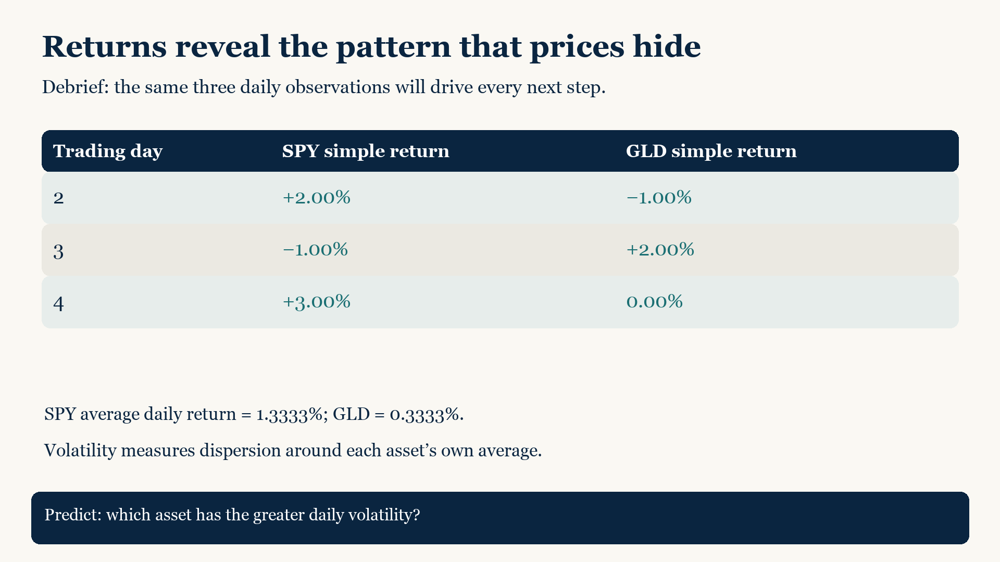
Covariance starts with deviations from averages
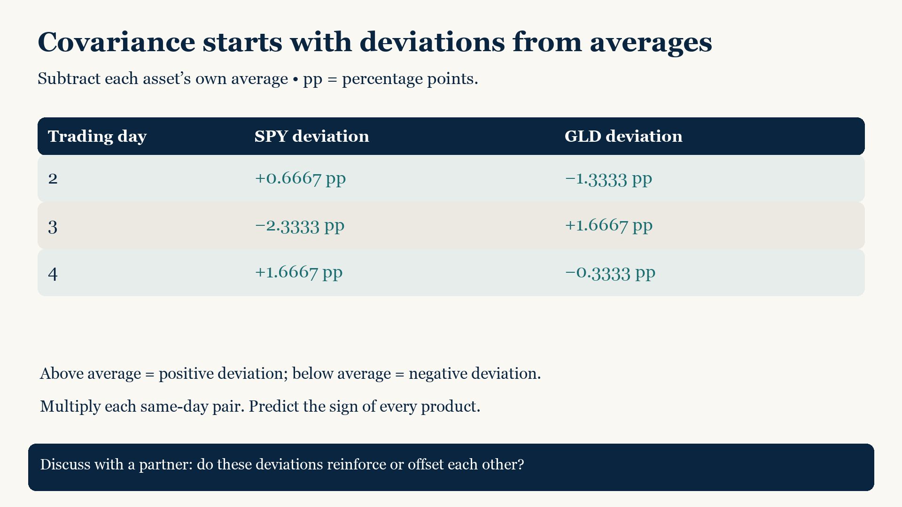
Negative covariance reveals offsetting movement
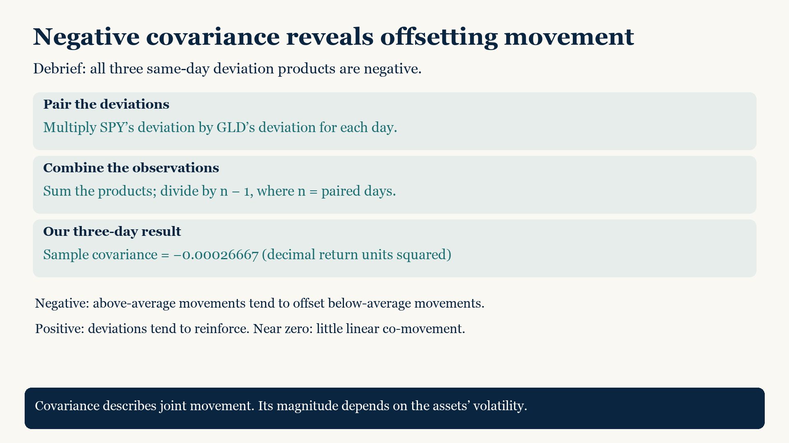
A matrix organizes every asset pair
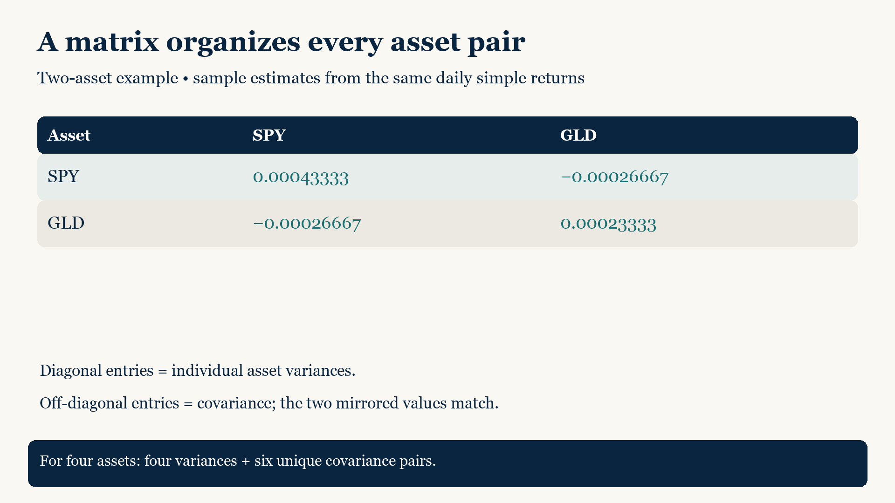
Weights turn asset returns into portfolio returns
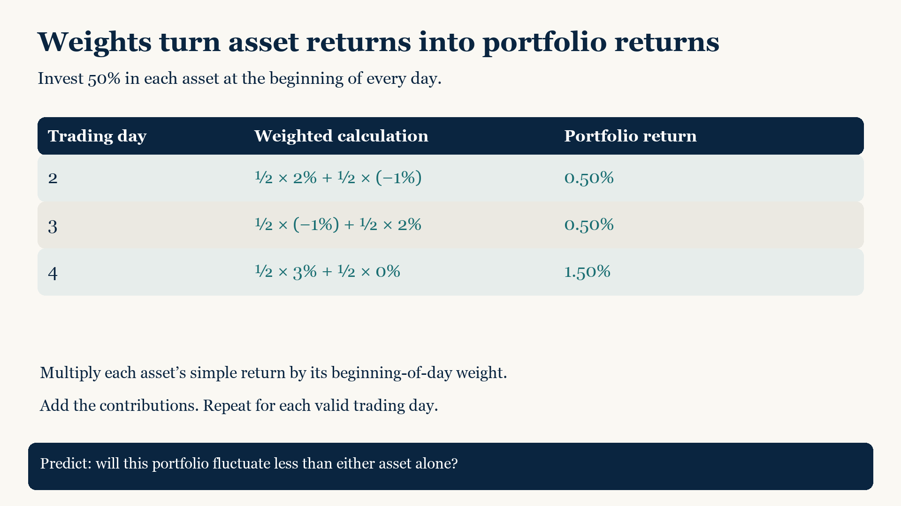
Portfolio risk is the spread of portfolio returns
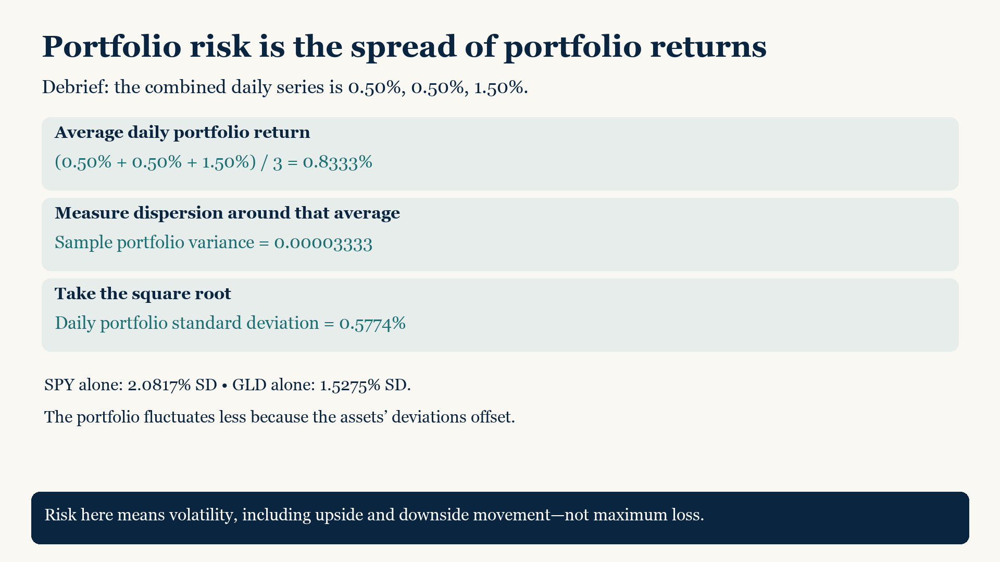
The covariance matrix gives the same portfolio risk
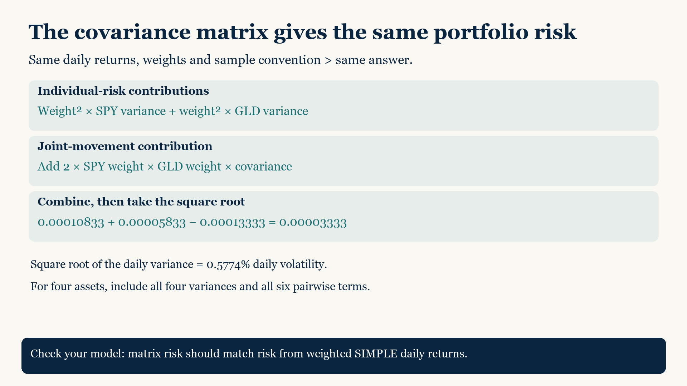
Annualize only after calculating daily risk
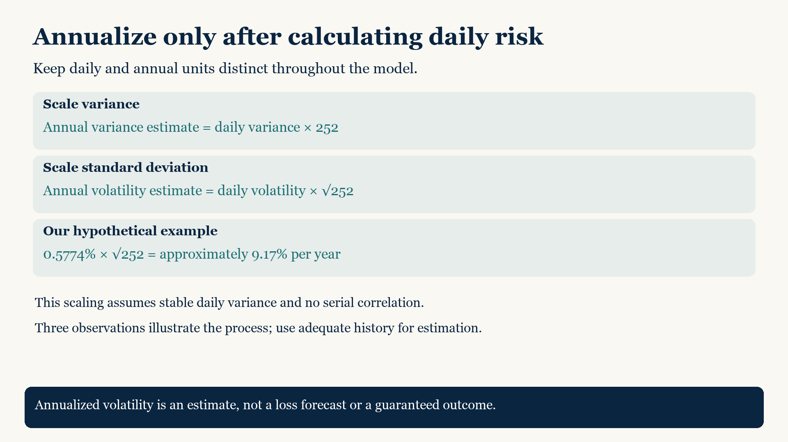
Now construct the analysis independently
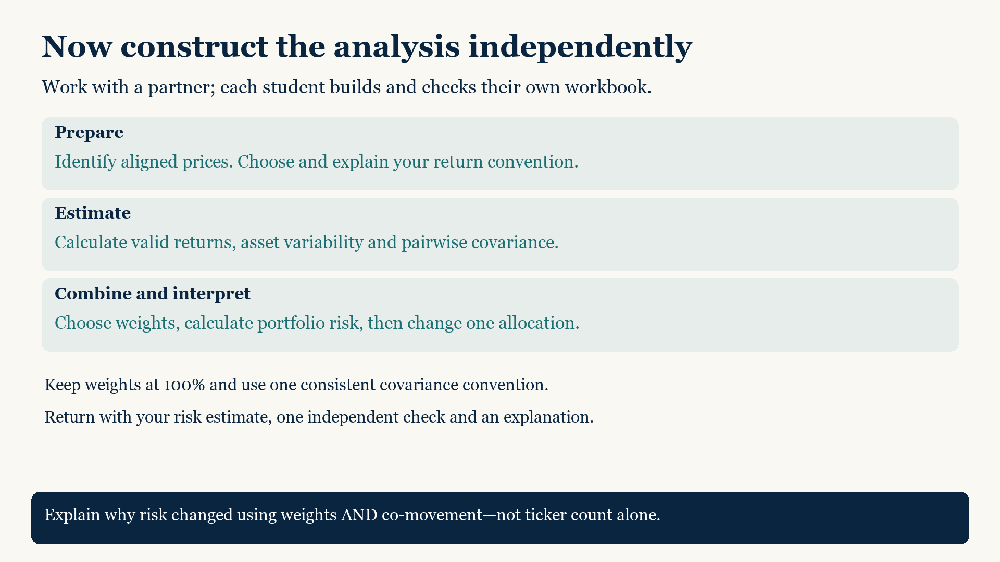
Sharpe ratio: excess return per unit of risk
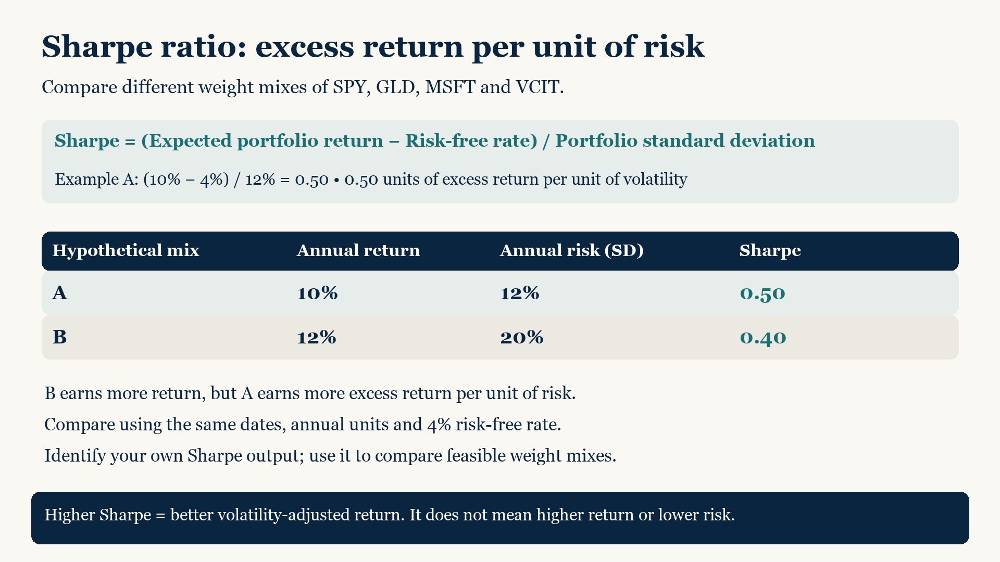
Use Solver to maximize the Sharpe ratio
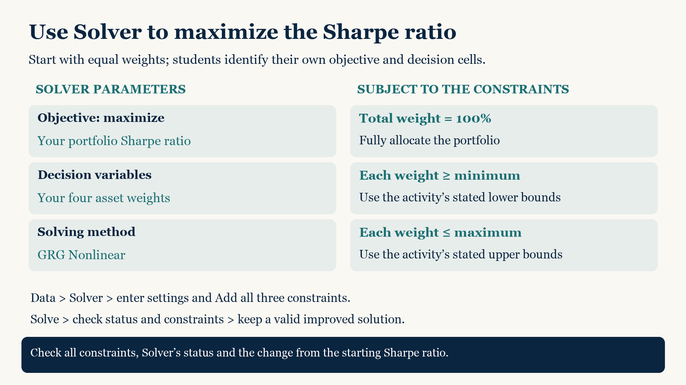